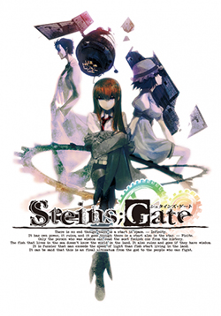
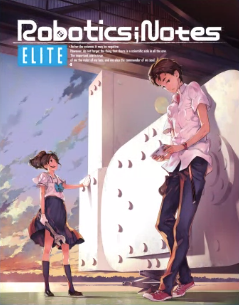
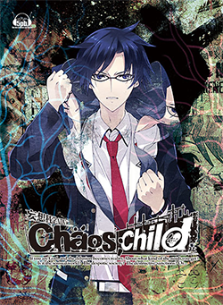
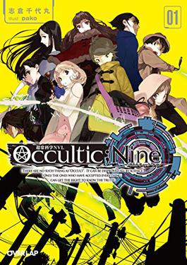
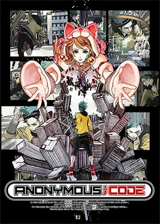

Science Adventure Series
Science Adventure, commonly shortened to SciADV, is a multimedia series consisting of interconnected science fiction stories created by Mages, initially in collaboration with Nitroplus. The main entries mostly take the form of visual novel video games.
Chaos;Head
Chaos;Head (stylized as ChäoS;HEAd) is a 2008 science fiction visual novel video game developed by 5pb. and Nitroplus. It is the first game in the Science Adventure series. Following the original Windows release, the enhanced version Chaos;Head Noah was released for Xbox 360 in 2009, and has since been ported to multiple platforms. An English localization was released by Spike Chunsoft for Nintendo Switch and Windows in 2022. The game follows Takumi Nishijou, who gets involved in the "New Gen" serial murder case. He frequently experiences delusions and hallucinations, some of which the player can influence, which affects the progression of the story.
Steins;Gate
Steins;Gate is a 2009 science fiction visual novel game developed by 5pb. and Nitroplus. It is the second game in the Science Adventure series, following Chaos;Head. The story follows a group of students as they discover and develop technology that gives them the means to change the past. The gameplay in Steins;Gate includes branching scenarios with courses of interaction.
Robotics;Notes
Robotics;Notes is a visual novel video game developed by 5pb. It is the third main game in the Science Adventure series, following Chaos;Head and Steins;Gate, and is described by the developers as an "Augmented Science Adventure". The game was originally released by 5pb. in Japan on the PlayStation 3 and Xbox 360 in 2012; the enhanced version Robotics;Notes Elite was released for PlayStation Vita in 2014, and for Nintendo Switch and PlayStation 4 in 2019. An English version of Robotics;Notes Elite was released by Spike Chunsoft in 2020 for Microsoft Windows, Nintendo Switch and PlayStation 4.
Chaos;Child
Chaos;Child (stylized as ChäoS;Child) is a 2014 visual novel video game developed by Mages. It is the fourth main entry in the Science Adventure series and a thematic sequel to Chaos;Head Noah. It was initially released for Xbox One, and later for PlayStation 3, PlayStation 4, PlayStation Vita, Microsoft Windows, iOS, Android, and Nintendo Switch. An English localization was released for the PlayStation 4 and PlayStation Vita by PQube in 2017, and for Windows and Switch by Spike Chunsoft in 2019.
Occultic;Nine
Occultic;Nine (Japanese: オカルティック・ナイン, Hepburn: Okarutikku Nain) is a Japanese light novel series written by Chiyomaru Shikura, and is a part of the Science Adventure franchise. It was later adapted into a visual novel and published by Mages in November 2017. The light novel series is licensed in English by J-Novel Club. A manga, illustrated by Ganjii, was serialized in Kodansha's good! Afternoon from October 2015 to May 2017. An anime television series adaptation by A-1 Pictures aired between October and December 2016.
Anonymous;Code
Anonymous;Code is a visual novel video game developed by Mages and Chiyomaru Studio, and is the sixth mainline entry in the Science Adventure series. Along with being a visual novel, it also has a fully working implementation of Conway's Game of Life built in that can be accessed via the in-game menu. Following a series of delays, the game was released for PlayStation 4 and Nintendo Switch on July 28, 2022 in Japan. A western English release, published by Spike Chunsoft, was announced in July 2022 with a Windows port, and released on September 8, 2023.